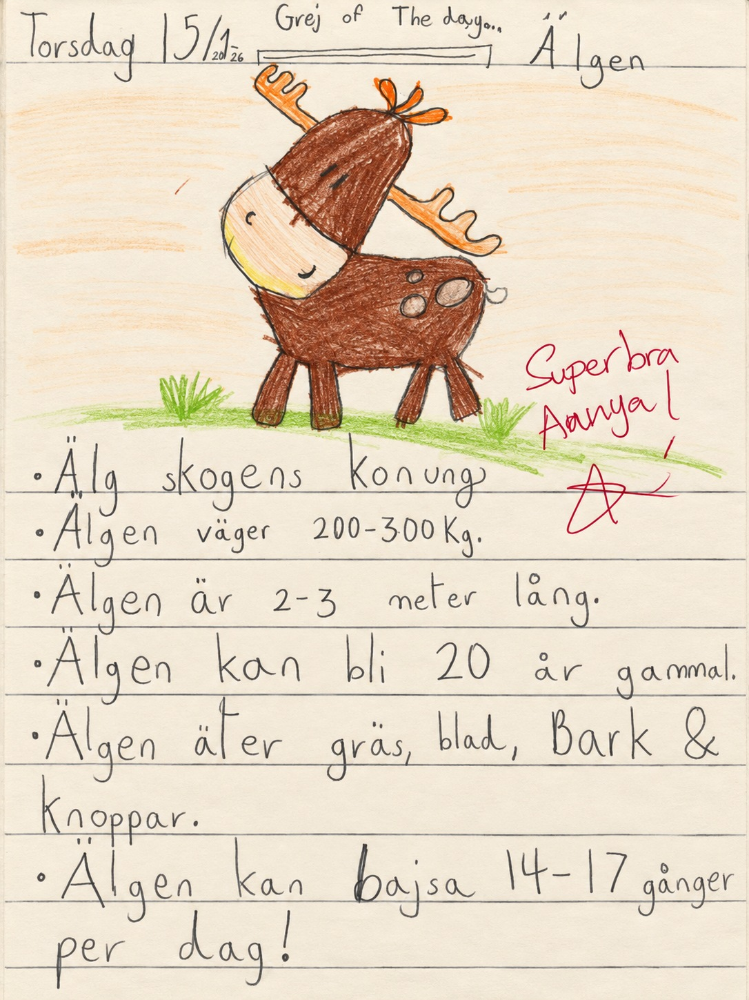

Knowledge World
En anteckningsbok.
En hel värld.
Hej! Jag heter Aanya. Här samlar jag saker jag har lärt mig, teckningar jag har ritat och små berättelser från min vardag.
Öppna min kunskapsvärld ↗
Mina ord. Mina upptäckter.En penna, några färger och så mycket att upptäcka.
Ur min egen anteckningsbok
Vilken sida vill du öppna?
Tryck på en teckning för att bläddra in.
Här finns mina texter och originalbilder.
Öppnar anteckningsboken …
En bok att spara
Aanyas kunskapsbok
Mina upptäckter samlade i en bok med mjuka pastellfärger. Boken innehåller ljusare, färglagda versioner av mina handskrivna sidor.